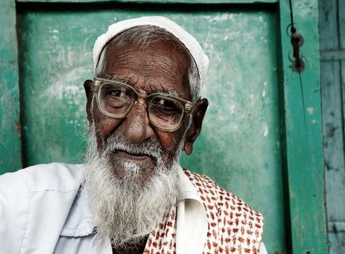
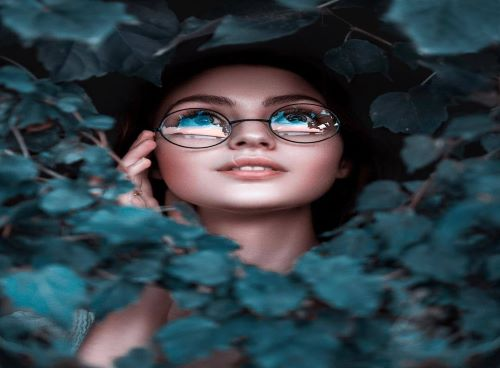

Portrait Photo
 
Portrait shoot
Rates Starting as per location
For Portrait type of photography when the subject along with the background, lighting
and emotion can evoke a sense of connection between the viewer and the portrait photograph.
We use a prop and a wide angle len.